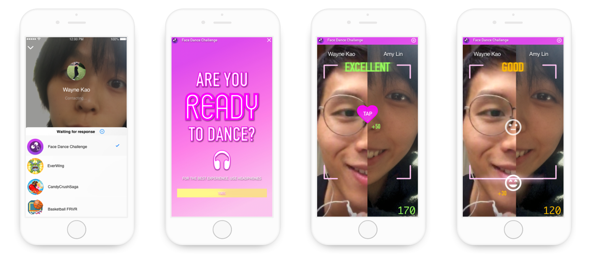
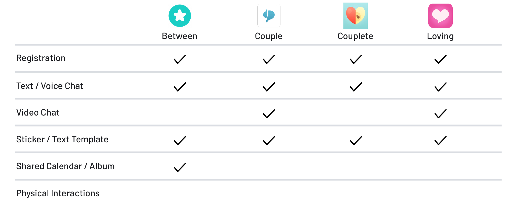

Face Dance Challenge Redesign
Improve Physical Interaction between LDR Couples
Type
- Individual Work
- Interaction Design
Duration
- 3 months
My Role
- Interaction Designer
- UX Researcher
What I Did
- Comparative Analysis
- Semi Diary Study
- Interaction Design
- Usability Test
Design Challenge
Improve Lack of Intimacy Due to Long Distance
Being in a long-distance relationship (LDR) can be challenging not only because it's hard to create common goals and memories but also because it can severely wear the romance between partners due to lack of intimacy. Worst yet, the blank between conversations during video-chat can even lead to insecurities in a relationship.
Long distance can wear away the romance between partners.
Solution Overview
Face Dance Challenge for Couples
To improve the sense of intimacy between partners in LDR, I came up with a game extension for Messenger which features a video-chat-based game, somatosensary interaction and a collaboration-based scoring mechanism. Face Dance Challenge is an extension that improves the lack of intimacy between couples at any stage of an LDR by filling up the blank between conversations, transmitting sense of touch, and creating a common goal for partners to achieve.
Screens of Mobile Interfaces
Research
To better understand my design challenge, I conducted a semi-constructed diary study on 3 relationship-related boards on the most popular BBS forum in Taiwan that preserves more than 20 years of records to understand the challenges that LDR couples in different stage of relationship would face.
Understanding the Users
Based on my findings from the diary study, I built 4 personas, 3 pro-persona and 1 anti-persona, to better target the success of potential users -- most couples that have successfully conquered LDR share common goal in life and what bothers them the most is not having physical interactions.

Have a Crush

In a Relationship

Married
Anti Persona
Marketing Research
To understand current digital solutions for LDR couples, I selected 5 top-rated applications designed for couples from the App Store. However, current solutions requires extra steps to connect and none of them provides physical interaction.
Comparative Analysis
Design Approach
Ideation: Solution Exploration
Based on research insights, I sketched out 8 different solutions, ranging from restaurant service design to waterproof remote control vibrator for sexual purposes. These solutions aims to help couples interact as if they were on each other's side.

8 Solutions to the Challenge
Use Cases and Context (User Journey)
To understand how users currently interact with their loved ones, I map out how couples in different stage of a relationship (crush, in a relationship, married) based on the 3 pro-personas.

User Journey Map
With the user journey map, I concluded 2 things:
- Couples are connected with their loved ones on social media.
- Couples would try to improve their interactions when there's a gap in between.
These findings led me to my final decision on redesigning FDC as a game extension on Messenger.
Design Synthesis & Rationale
Following user journey mapping, QOC (Questions, Options and Criteria) rationale is implemented to explore the possibilities and challenges of different means of interaction in the video-chat-based game.
Design Rationale (solid lines: criteria met; dotted lines: against the criteria)
Rapid Prototyping
To validate my research ideas and the initial design, I conducted a round of rapid prototyping and came up with 10 interactions to test with users.
Paper Prototyping
The first iteration is rapid prototyping on paper. My sketches include 2 major themes: 1) Messenger and 2) Face Dance Challenge.
Messenger paper prototypes (upper row); Face Dance Challenge prototypes (lower row)
User Testing
Then I tested 2 users with paper prototypes and here are the major takeaways from the test:
- It's hard for users to find out where the extensions live under Messenger text chat mode.
- Users only react to the emojis that shows on their half of the screen.
- When the game ends, users are confused as they were not able to see their partner in the leading board screens, even though they are actually in a video chat.
Major Design Changes
With the feedback and takeaways from the user tests, I then move on to hi-fi prototyping and design iterations, with an eye to creating a joyful gaming experince:
One Step Further
Incentive-increasing features
My design philosophy has always been “People respond to incentives.” Aside from maintaining consistency across the whole project, I always think one step further as of how to make my design appealing and attractive in the long run. Thus, an explicit feature that has to do with incentive-creating is the mechanism that couples can unlock more interactions as they score more points. Additionally, I add another line of word hinting the users on how far they are from the new interaction. Other than that, I want to avoid LDR couples who play FDC to fight because of the game. Thus, the mechanism of the game itself awards good teamwork but if only one of the couple performs well, they can still gain points. Through this scoring mechanism, I would like to convey the message that though it’s perfect that we, as a couple, can work well together, if it turns out to be just the opposite, it’s still okay because one’s strength can help make up for the other’s weakness.
Final Screens

Impact
The societal impact I would like to make on couples in LDR is that there’s no need to be afraid of the distance between them and their special ones and it’s okay to run out of things to share during video-chat. LDR couples are no different from ordinary couples. Though reminiscing the good old days helps them go through the dark lonely nights, couples can still create new memories in spite of being physically apart.
Through my design, I want to inspire more potential or future design for LDR couples as during my competitive analysis, I found that there’s less existing digital solutions designed just for LDR couples.
Takeaways
The hardest part of going through the design process is not design itself. Instead, for me, it’s conquering the fear of falling behind. I’m really fortunate to have Tonya as my instructor to boost me up when I felt that I could not see my strength in the field of information with an economics background. However, as it turned out, my past-4-year training in economics does help me think more thoroughly and go one step forward to consider the long-run effect of my product.